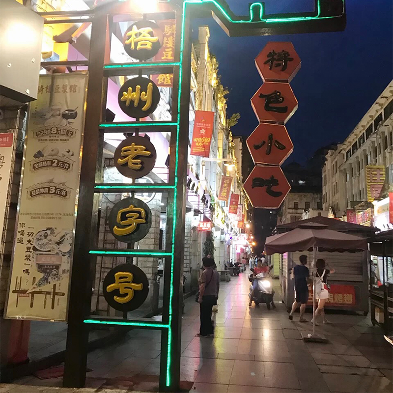
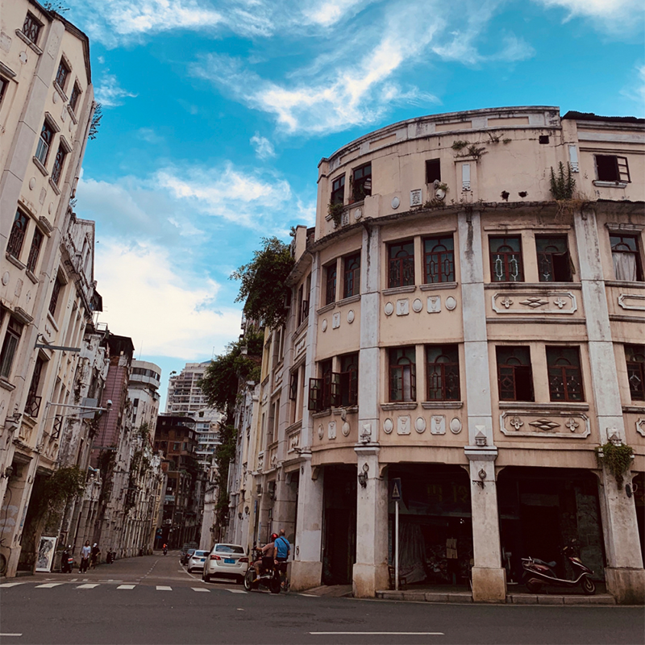
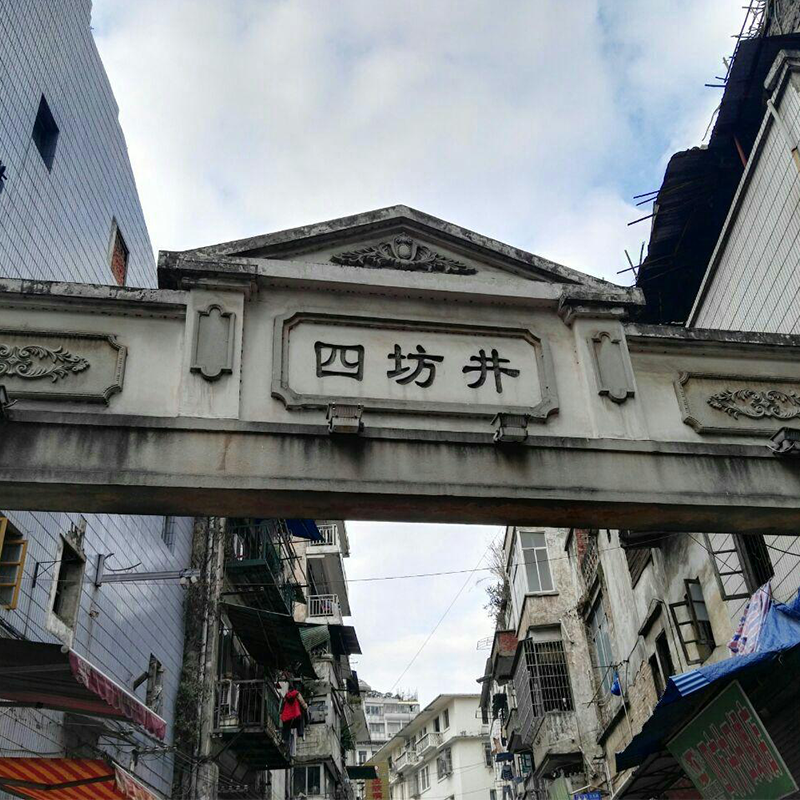
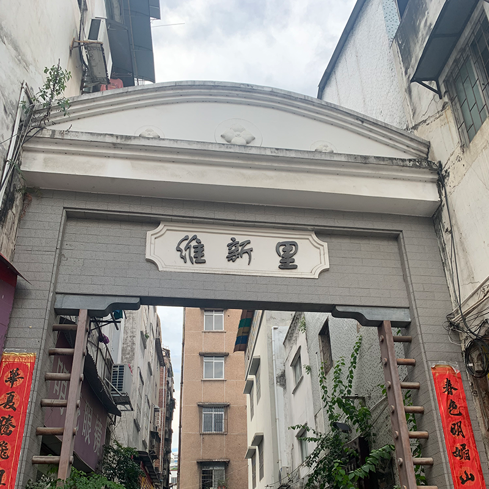
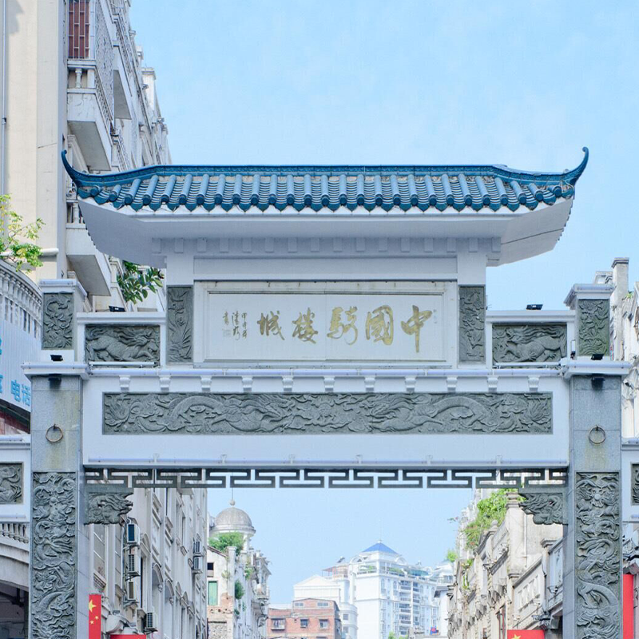
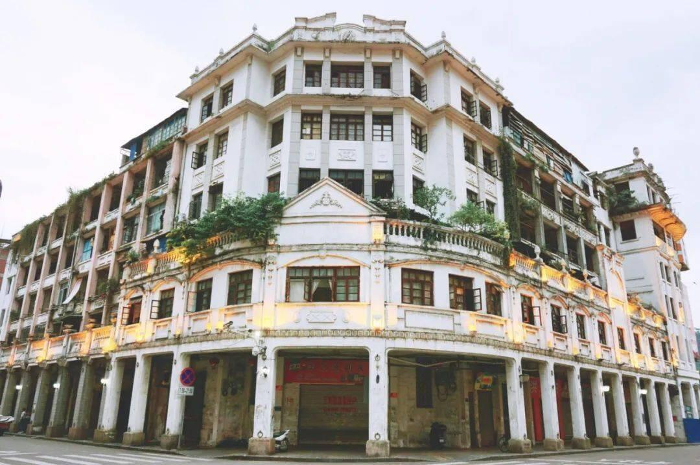
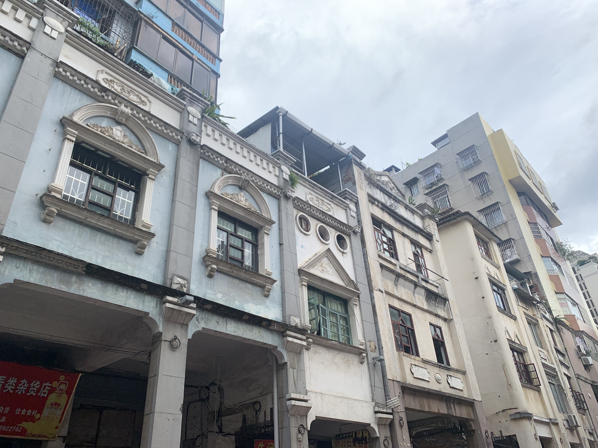
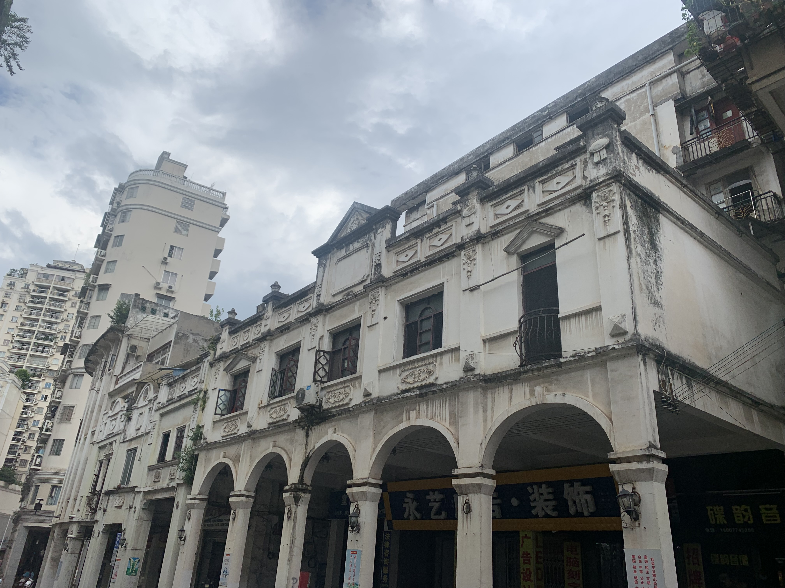
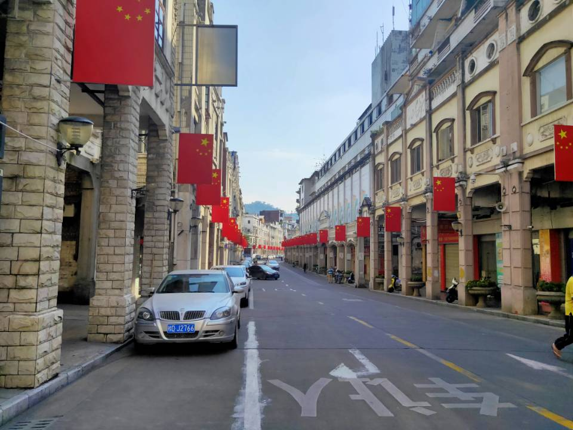

中国当代著名国学家、文化学者肖健指出，骑楼城是梧州近现代百年商贸繁华的历史见证。骑楼城是梧州“百年两广商埠”辉煌历史的见证。22条骑楼街道交错分布在骑楼城内，汇聚了超过500座骑楼建筑。

梧州老字号特色小吃街是梧州本土特色美食文化的传承地，岭南美食文化百川汇流之地。骑楼 城是梧州近现代百年商贸繁华的历史见证，街区设在骑楼城，是展示梧州本土乃至岭南地区特色美 食文化。

四坊井

维新里

中国骑楼城

仿巴洛克式。这种形式在东南亚和我国南方城市的骑楼中被普遍使用。
这种形式骑楼建筑风格不明显，建筑造型和立面装饰兼有多种风格。


这种形式骑楼延续了我国南方传统居民的特点，底层沿街挑出，长廊跨越人行道沿街布置，楼层正面墙上并排开着两只三扇窗户，立面基本无装饰。
这种骑楼一般建于上世纪80年代以后，在尺度、结构、材料、造型风格等方面与传统骑楼区别明显。

版权所有 ©会两下小组 2021
素材来源 |图片：百度图片 小红书用户IVY 小红书用户一只野生的面包菌
文章：百度百科 梧州骑楼简史